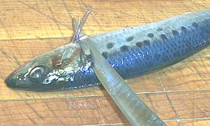
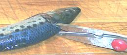
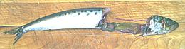
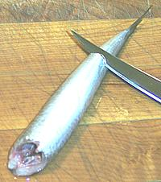
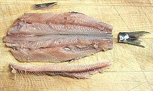

|
California sardines are very delicate, especially in the
belly area. If you have the fish guy clean them you'll end up with fish a
bit torn up with ribs sticking out. You can do better.
These fish are way too large to eat the heads like with smelts, and if you
cook them head-on the head bends back and looks ugly - it's best to remove
it right from the start and that's the way we'll do it here.
If you go the full route through filleting (see below), you'll get
about 1.1 ounces from a 2 ounce fish (55%). The skin is very delicate and
not removed. It has negligible shrink when cooked - a whole butterflied
sardine can be pan fried without curling.
If after cleaning or filleting you freeze these fish for future use
keep in mind that oily flesh becomes rancid rather quickly even in a good
freezer compartment, so use them within a month or so. Of course these
fish are much too strong flavored and oily to use the heads, fins and
bones for soup stock.
- Make a shallow cut on both sides behind the collar and behind the bottom
fin tilting the knife to cut under the collar.
- Use your kitchen shears to cut from the top just deep enough to cut
though the backbone.
- Now pull the head off forward and the innards will come out with it
with no damage to the body. The gut is sometimes reluctant to part from
the anus so you may need to pull it out separately.
- If the gut breaks, and it often does, make a cut just forward of the
anus (see photo). You can now rinse the fish under running water open
end up and the gut will flush out the cut and be easily removed.
- Rinse your sardines thoroughly and toss into a bowl of ice water as
you work.
- They can now be cooked by any recipe calling for them cooked bone-in
or you can go ahead and fillet and butterfly them (see below).
Because the flesh of these fish is so tender they can be filleted with
great ease, a real plus for such small fish.
- After cleaning (see above) cut the belly from the head end to the back
of the body cavity. Clean out any remaining membranes or other stuff.
- Make a cut on both sides of the anal fin with your filleting knife and
pull the fin out.
- Cut off the tail.
- Now, with the fish on it's back, open the flesh out from the tail end
removing it from the backbone. Pull up the backbone and follow right
behind it with a finger on each side to hold the flesh down, going under
the ribs and right off the front of the fish. With a little practice you
will lose almost no flesh.
- With your sharp kitchen knife trim off the fleshless edges which will
also cut away the pelvic fins in the belly area.
- Check for any ribs remaining on the fillet, usually near the back end
of the body cavity. If you are going to pickle the fillets or give them a
long acid marinade you don't have to be too careful about the tiny ones,
they'll dissolve, or if you fry the fillets they'll be crisped.
- Now close the fish skin side out, and holding it from the sides pull
out the dorsal fin and it's spines. It will pull a thread behind it so hold
the flesh so it doesn't cut the top of the fish.
|